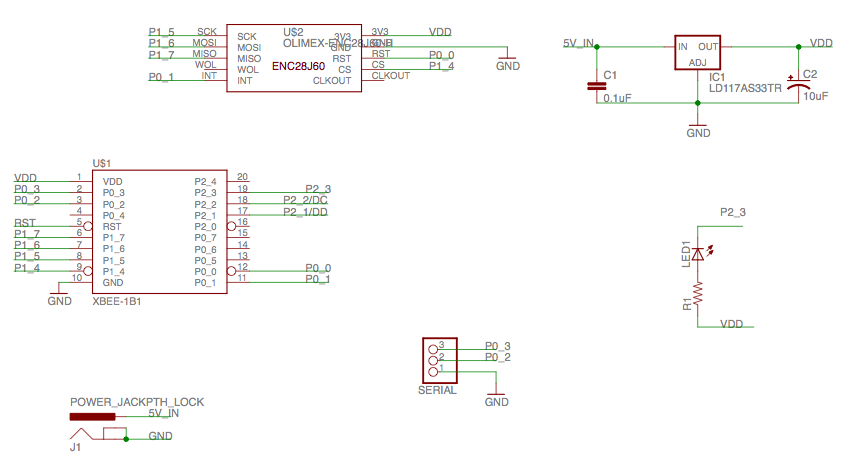

The SenseHub is a two-chip radio to Internet gateway. It uses the CC1110 to as a radio and microcontroller and the ENC28J60 for ethernet. The pbhub app support relaying data to/from SenseMotes to Pachube.
Currently, SenseHub is a DIY project. You will need to obtain an XRF CC1110 module from Ciseco (or equivalent) and reflash it with the CCTL bootloader. For this we recommend using either the CC-Debugger or a GoodFET. We hope to start offering pre-flashed modules in future.
You will need to connect up an ENC28J60 module according to the schematic below:

Before building the code, edit config.mk and replace both --feedid=MYFEEDID and --apikey=MYPACHUBEAPIKEY. The feed id is the number of the Pachube feed to use, the API key is a Pachube API key with read/write permissions on that feed.
From the top of the firmware tree type make APP=pbhub install. You should see the LED flash until a connection is made, then it will stay on.
Take a second XRF and program it with make APP=pbnode install. The pbnode app provides a simple command line interface to put, get, sub and unsub. Type help at the serial console.